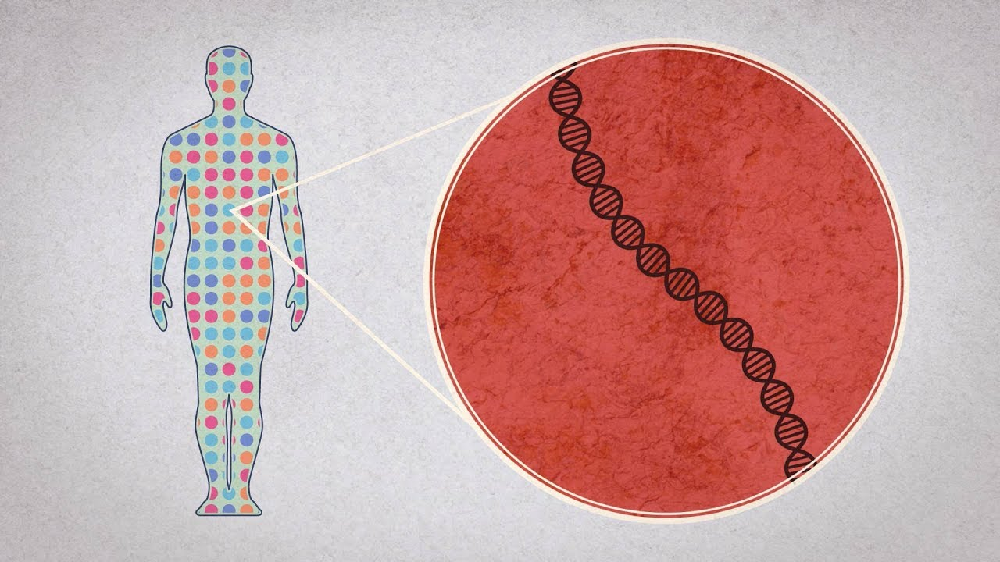
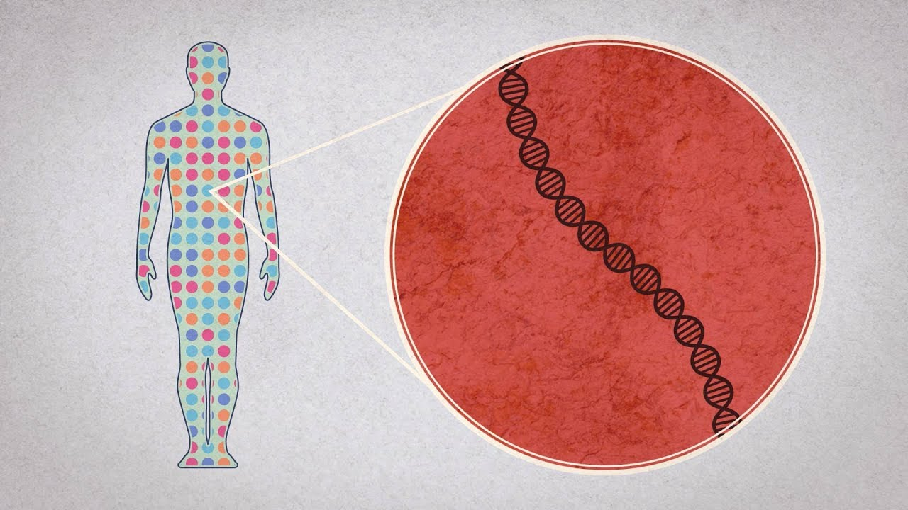
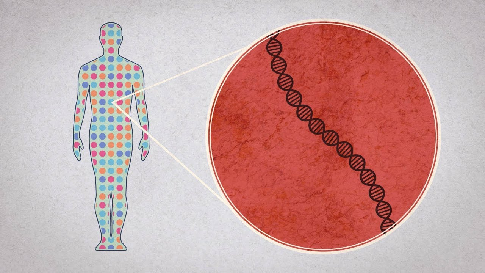
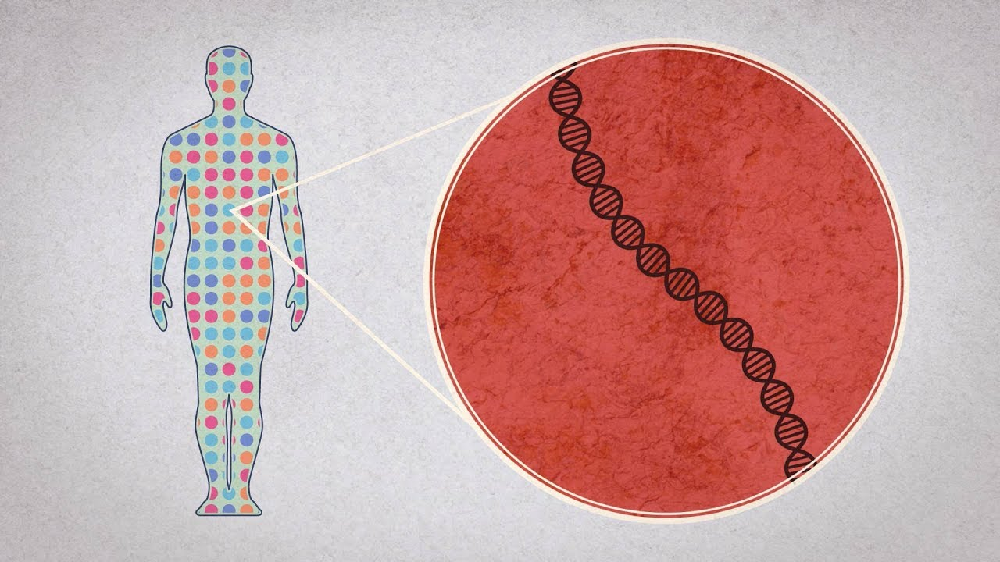

За човечанство су изузетно значајни претходно поменути подаци и истраживања за даљи развој. Међутим, питање је како ће се у будућности искористити стечено знање. Знање о очитавању хуманог генома помоћиће у откривању болести, мутација...,али да ли ће се само употребити на тај начин. Секвенција хуманог генома може да се употреби за стварање такозване супер-расе. Можемо да претпоставимо које гене ће ко наследити истаживањем гена родитељске гарнитуре. Самим тим сазнањем, моћићемо да знамо унапред које болести ће имати наше дете, како ће изгледати, коју боју очију ће имати. Тако се развила нова наука- еугеника.
Еугеника има за циљ да побољша људске гене и да се регулише број становника на земљи. Еугеника је наука дефинисана 1883. године од стране Францеса Галтона, а 1937. је еугенику прогласио социалном филозофијом. Еугеника као реч значи имати добре гене. На свету постоји генетичко оптерећење и много мутација. Те мутације изазивају спонтане побачаје, обољења... Еугеника је примењена наука или био-социјални програм за побољшање и контролу људске врсте и то тако што би требало спречити „инфериорне људе“ да имају децу (негативна еугеника) и подстицати „супериорне“ да се што више размножавају (позитивна еугеника).